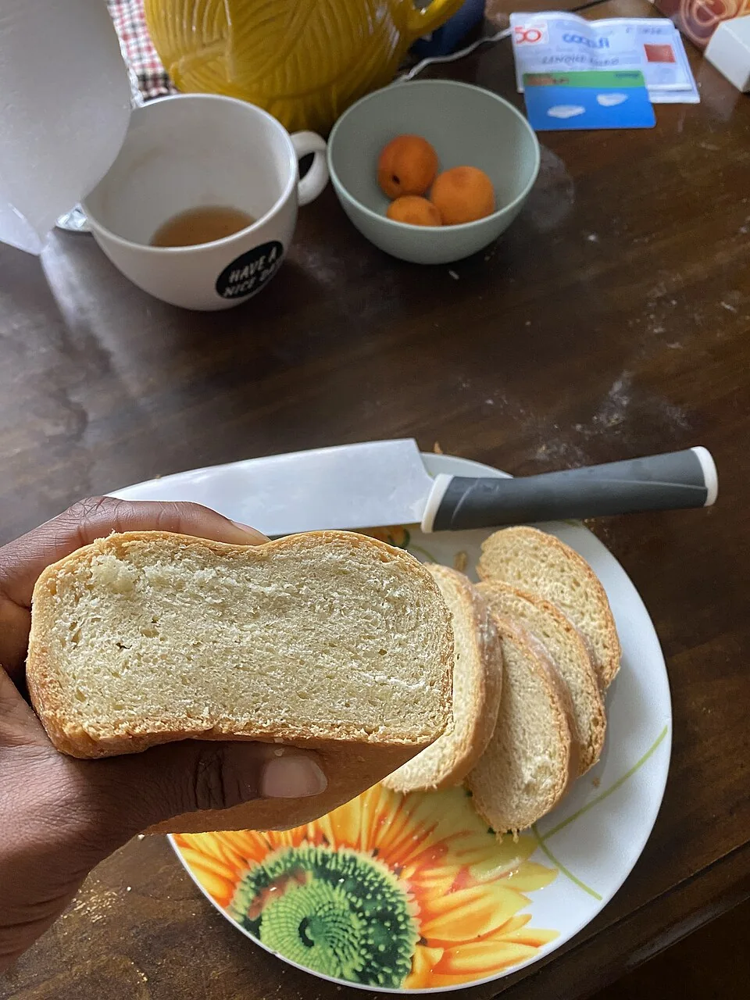

Weizenbrot

Bildquelle | Zuletzt aufgerufen am
Mild im Geschmack, luftig im Inneren. Der helle Klassiker, der zu fast allem passt.
- Herkunft
- Vorderasien · weltweit
- Getreide
- Weizen
- Geschmack
- Mild & fein
Geschichte
Die Geschichte des Weizenbrotes beginnt mit dem Anbau früher Weizenarten in Vorderasien. Aus einfachen Getreidefladen entwickelten sich im Lauf der Jahrtausende gelockerte Brote. Einen einzelnen Erfinder oder einen eindeutigen Ursprungsort des heutigen Weizenbrotes gibt es deshalb nicht.
Weizen eignet sich besonders gut für luftige Brote: Beim Kneten bildet sein Klebereiweiß ein elastisches Gerüst, das die Gärgase festhält. Heute findet man Weizenbrot in vielen Formen – als runden Laib, Kastenbrot oder längliches Weißbrot. Gerade im Mittelmeerraum gehört helles Brot selbstverständlich auf den Tisch.
Quelle: Plötzblog: Einteilung der Brotsorten | Zuletzt aufgerufen am
Eigenschaften
- Zutaten
- Weizenmehl, Wasser, Salz und Hefe oder Sauerteig. Je nach Rezept kommen weitere Zutaten hinzu.
- Geschmack
- Mild und dezent getreidig. Eine kräftige Bräunung bringt Röstaromen in die Kruste.
- Kruste
- Goldgelb bis goldbraun, bei frei gebackenen Broten häufig dünn und knusprig.
- Krume
- Hell, weich und locker; die Poren können je nach Teigführung fein oder unregelmäßig sein.
Frische Butter, milder Käse oder selbst gemachte Marmelade lassen dem feinen Brotgeschmack Raum.
Weitere Informationen
- Ein elastisches Gerüst Das beim Kneten entstehende Glutengerüst hält Gasbläschen fest. So bekommt Weizenbrot sein Volumen.
- Die Form entscheidet mit Ein freigeschobener Laib hat mehr Krustenfläche als ein Kastenbrot. Das verändert das Verhältnis von Kruste und Krume.
- Auch mit Sauerteig Weizenbrot muss kein reines Hefebrot sein. Ein Weizensauerteig kann für Lockerung und ein vielschichtiges Aroma sorgen.
Rezept
Ein unkompliziertes Kastenbrot mit Weizenmehl und Trockenhefe.
Einfaches Weizenbrot auf Chefkoch | Zuletzt aufgerufen am